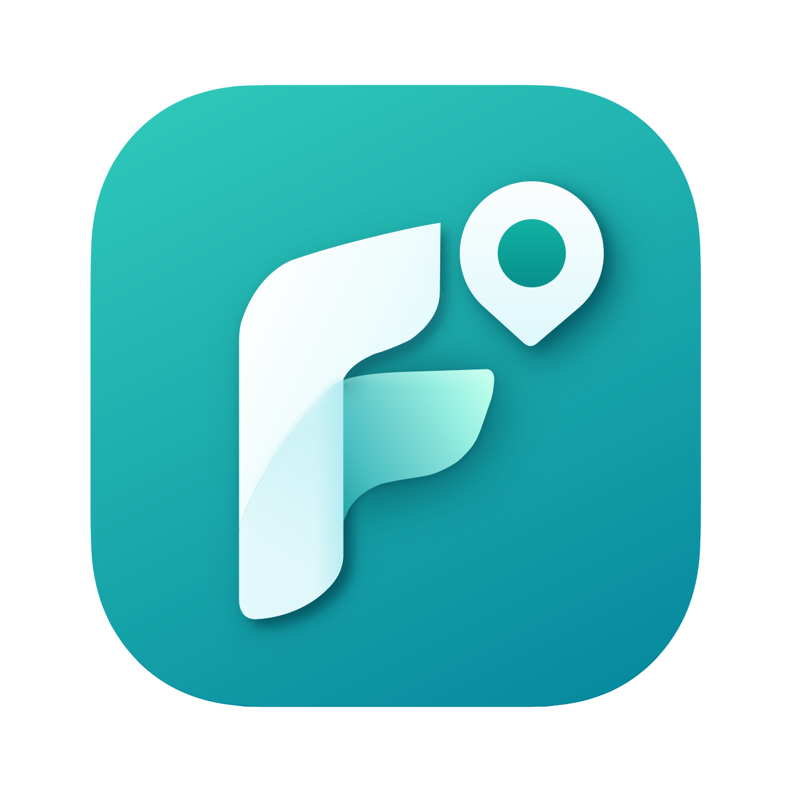
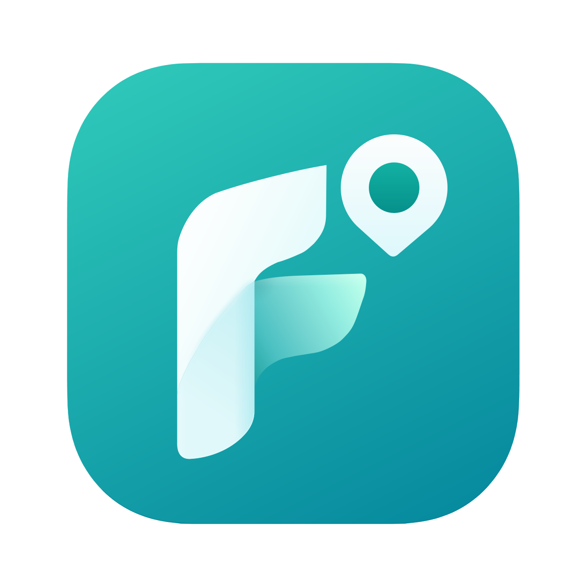
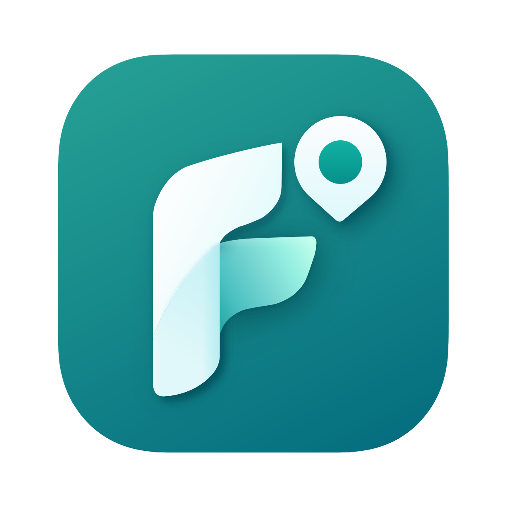

全部为矢量 SVG · 由 F-icon-transparent.svg 派生 · 原始图形路径未做任何重绘
master 用于 ≥96px 的展示场景；flat 去除投影，用于 ≤64px 及禁止滤镜的渲染环境。



circle 用于社交头像；maskable 为 PWA 可遮罩图标（红色虚线为安全区）；apple-touch 为全出血方形（由系统自行裁圆角）。
glyph 原配色用于深色 / 品牌色背景；glyph-teal 为浅色背景重配色版；mono 为单色剪影（印刷、刻字、水印）。
16–64px 使用扁平版（无投影糊成一团的问题）。
sprite.svg 内含 5 个 symbol：findly-icon / findly-icon-flat / findly-glyph / findly-glyph-teal / findly-mono（mono 使用 currentColor，可随文字颜色变化）。用法：
<svg width="48"><use href="assets/sprite.svg#findly-glyph-teal"/></svg>
| 文件 | 用途 |
|---|---|
| master/icon-master.svg | 主图标（1254 viewBox，含投影）——大尺寸展示、引导页 |
| master/icon-flat.svg | 扁平主图标（无滤镜）——兼容受限渲染器 |
| app/icon-dark.svg | 深色模式应用图标 |
| app/icon-circle.svg | 圆形头像（社交平台） |
| app/icon-maskable.svg | PWA 可遮罩图标（图形缩放至安全圆内） |
| app/apple-touch-icon.svg | iOS 全出血方形（如需 PNG 请自行导出 180×180） |
| glyph/glyph.svg | 无底图形·原配色（深色/品牌色底） |
| glyph/glyph-teal.svg | 无底图形·青绿配色（白色/浅色底） |
| glyph/glyph-mono-black.svg / -white.svg | 单色剪影（黑/白） |
| favicon.svg | 网站收藏夹图标（64） |
| sizes/icon-16…512.svg | 标准尺寸系列（≤64 扁平版，≥96 完整版） |
| sprite.svg | symbol 合集，网页内联复用 |
| site.webmanifest | PWA 清单（引用 maskable 与 apple-touch） |
| tools/build.mjs | 构建脚本：node tools/build.mjs 可重新生成全部文件 |